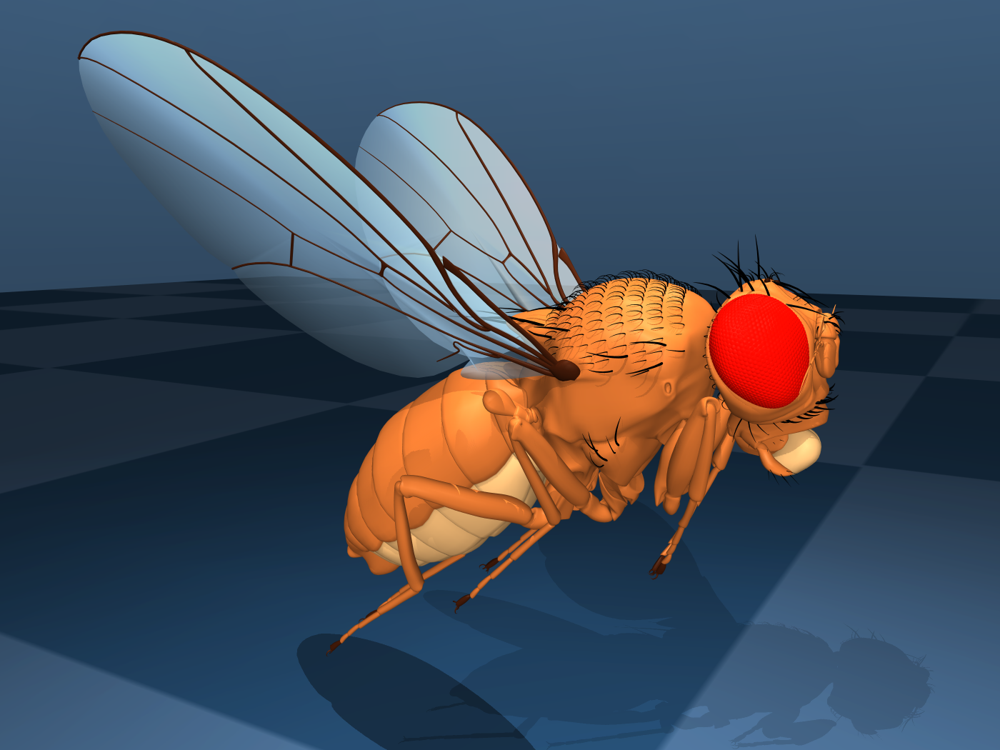
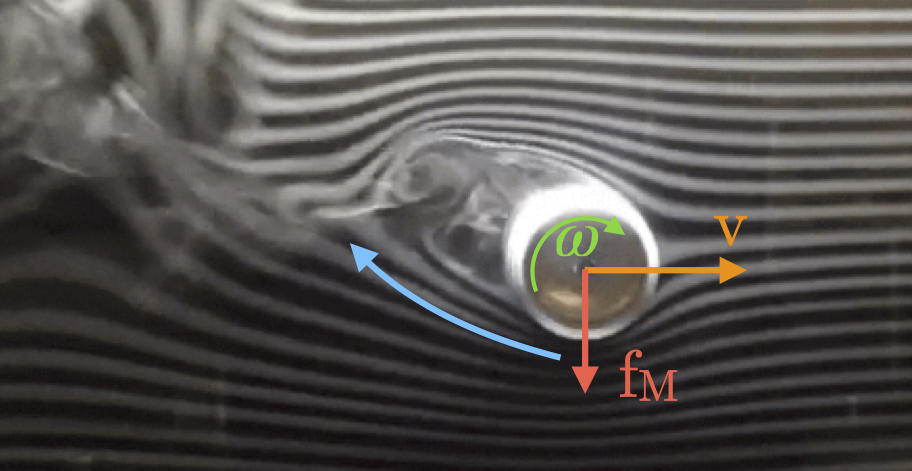
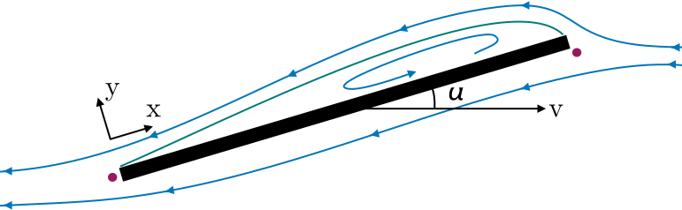
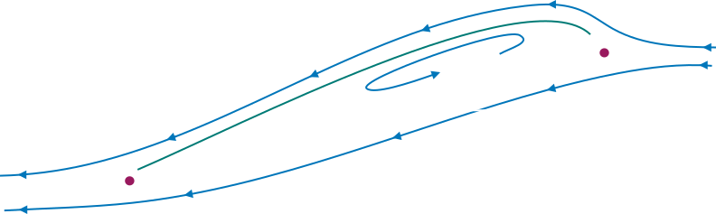

流体力#
备注
本页由 AI（Claude Sonnet）根据 MuJoCo 官方英文文档（2026-11-16 版）翻译，仅供学习参考；如有出入，以英文原版为准。术语对照见资料包中的 术语表.md 。
对流体动力学进行严格模拟超出了 MuJoCo 的范围，而且对于我们希望支持的应用来说速度也会太慢。尽管如此，我们提供了两种唯象模型，足以模拟飞行和游泳等行为。这些模型是无状态的，即不会为周围的流体分配额外的状态，但仍能够捕捉刚体在流体介质中运动时的主要特征。
这两种模型都通过将 density 和 viscosity 属性设置为正值来启用。这些参数对应于介质的密度 \(\rho\) 和粘度 \(\beta\)。
惯性模型只使用粘度和密度，并根据刚体（body）的等效惯性盒推断几何形状。
The Inertia-based model, uses only viscosity and density, inferring geometry from body equivalent-inertia boxes.椭球模型更为精细，它使用 geom 的椭球近似。除了介质的全局粘度和密度之外，该模型还为每个参与相互作用的 geom 提供 5 个可调参数。
The Ellipsoid-based model is more elaborate, using an ellipsoid approximation of geoms. In addition to the global viscosity and density of the medium, this model exposes 5 tunable parameters per interacting geom.
小技巧
正如数值积分一节所详述，在存在与速度相关的力时，隐式积分能显著提高仿真稳定性。下面介绍的两种流体力模型都具有这一性质，因此在使用流体力时，推荐使用 implicit 或 implicitfast 积分器。这两种模型所需的解析导数均已完整实现。
implicit or implicitfast intergrators are
recommended when using fluid forces. The required analytic derivatives for both models are fully implemented.惯性模型#
在该模型中，出于流体动力学计算的目的，每个刚体的形状被假定为等效惯性盒，它也可以被可视化（visualization）。对于质量为 \(\mathcal{M}\)、惯性矩阵（inertia matrix）为 \(\mathcal{I}\) 的刚体，其等效惯性盒的半尺寸（即半宽、半深和半高）为
令 \(\mathbf{v}\) 和 \(\boldsymbol{\omega}\) 表示刚体在刚体局部坐标系（与等效惯性盒对齐）中的线速度和角速度。流体作用于固体的力 \(\mathbf{f}_{\text{inertia}}\) 和力矩 \(\mathbf{g}_{\text{inertia}}\) 是以下各项之和
这里下标 \(D\) 和 \(V\) 分别表示二次阻力（Drag）和粘性阻力（Viscous resistance）。
二次阻力项取决于流体的密度 \(\rho\)，与刚体速度成二次方关系，在高雷诺数下是流体力的有效近似。力矩是通过对旋转产生的力在表面积上积分得到的。力和力矩的第 \(i\) 个分量可以写为
粘性阻力项取决于流体粘度 \(\beta\)，与刚体速度成线性关系，在低雷诺数下近似流体力。请注意，粘度可以独立于密度使用，以使仿真的阻尼更大。我们在低雷诺数下使用半径为 \(r_{eq} = (r_x + r_y + r_z) / 3\) 的等效球体公式。由此得到的刚体局部坐标系下的三维力和力矩为
也可以通过指定非零的 wind 来影响这些力，它是一个三维向量，在流体动力学计算中会从刚体线速度中减去。
椭球模型#

本图中具备飞行能力的黑腹果蝇（Drosophila Melanogaster）模型见 Vaxenburg et al. [VSM+24]。#
本节基于 geom 形状的椭球近似，描述并推导一个无状态模型，用于计算周围流体作用于运动刚体的力。与上一节的惯性模型相比，该模型能够对不同类型的流体力进行更细粒度的控制。该模型的主要应用场景是昆虫飞行，见右图。
概述#
该模型按 geom 激活：将 fluidshape 属性设置为 ellipsoid，这同时会禁用其父刚体的惯性模型。fluidcoef 属性中的 5 个数值对应以下含义
ellipsoid, which
also disables the inertia-based model for the parent body. The
5 numbers in the fluidcoef attribute correspond to the following semantics索引 Index |
描述 Description |
符号 Symbol |
默认值 Default |
|---|---|---|---|
0 |
钝体阻力系数 Blunt drag coefficient |
\(C_{D, \text{blunt}}\) |
0.5 |
1 |
细长体阻力系数 Slender drag coefficient |
\(C_{D, \text{slender}}\) |
0.25 |
2 |
角阻力系数 Angular drag coefficient |
\(C_{D, \text{angular}}\) |
1.5 |
3 |
Kutta 升力系数 Kutta lift coefficient |
\(C_K\) |
1.0 |
4 |
Magnus 升力系数 Magnus lift coefficient |
\(C_M\) |
1.0 |
该模型的各个组成部分是 Andersen et al. [APW05b] 向三维情形的推广。流体作用于固体的力 \(\mathbf{f}_{\text{ellipsoid}}\) 和力矩 \(\mathbf{g}_{\text{ellipsoid}}\) 是以下各项之和
其中下标 \(A\)、\(D\)、\(M\)、\(K\) 和 \(V\) 分别表示附加质量（Added mass）、阻力（Drag）、Magnus 升力（Magnus lift）、Kutta 升力（Kutta lift）和粘性阻力（Viscous resistance）。\(D\)、\(M\) 和 \(K\) 项分别由上述 \(C_D\)、\(C_M\) 和 \(C_K\) 系数缩放，粘性阻力随流体粘度 \(\beta\) 缩放，而附加质量项不可缩放。
符号说明#
我们描述物体在密度为 \(\rho\) 的无粘、不可压缩静止流体中的运动。模型中，任意形状的物体用半轴为 \(\mathbf{r} = \{r_x, r_y, r_z\}\) 的等效椭球来描述。问题在一个与椭球各边对齐、并随椭球一起运动的参考坐标系中描述。刚体的速度为 \(\mathbf{v} = \{v_x, v_y, v_z\}\)，角速度为 \(\boldsymbol{\omega} = \{\omega_x, \omega_y, \omega_z\}\)。我们还将使用
雷诺数是流动中惯性力与粘性力之比，定义为 \(Re=u~l/\beta\)，其中 \(\beta\) 是流体的运动粘度，\(u\) 是流动的特征速度（或者通过变换参考系，即物体的速度），\(l\) 是流动或物体的特征尺寸。
我们用 \(\Gamma\) 表示环量，即速度场沿闭合曲线的线积分 \(\Gamma = \oint \mathbf{v} \cdot \textrm{d} \mathbf{l}\)，并且根据斯托克斯定理，\(\Gamma = \int_S \nabla \times \mathbf{v} \cdot \textrm{d}\mathbf{s}\)。在流体动力学记号中，符号 \(\boldsymbol{\omega}\) 通常用于表示涡量，定义为 \(\nabla \times \mathbf{v}\)，而不是角速度。对于刚体运动，涡量是角速度的两倍。
最后，我们用下标 \(i, j, k\) 表示对 \(x, y, z\) 对称成立的一组三个方程。例如 \(a_i = b_j + b_k\) 是以下 3 个方程的简写
椭球投影#
我们给出如下结论。
引理
给定一个半轴为 \((r_x, r_y, r_z)\) 且与坐标轴 \((x, y, z)\) 对齐的椭球，以及一个单位向量 \(\mathbf{u} = (u_x, u_y, u_z)\)，该椭球在法向为 \(\mathbf{u}\) 的平面上的投影面积为
展开查看推导
引理的推导
- 椭圆的面积Area of an ellipse
任何以原点为中心的椭圆都可以用二次型 \(\mathbf{x}^T Q \mathbf{x} = 1\) 来描述，其中 \(Q\) 是实对称正定 2x2 矩阵，决定了椭圆的方向和半轴长度，\(\mathbf{x} = (x, y)\) 是椭圆上的点。椭圆的面积为
Any ellipse centered at the origin can be described in terms of a quadratic form a \(\mathbf{x}^T Q \mathbf{x} = 1\), where \(Q\) is a real, symmetric, positive-definite 2x2 matrix that defines the orientation and semi-axis lengths of the ellipse, and \(\mathbf{x} = (x, y)\) are points on the ellipse. The area of the ellipse is given by\[A = \frac{\pi}{\sqrt{\det Q}} . \]- 椭球的截面Ellipsoid cross-section
我们首先计算以原点为中心的椭球与过原点、单位法向量为 \(\mathbf{n} = (n_x, n_y, n_z)\) 的平面 \(\Pi_{\mathbf{n}}\) 相交所形成的椭圆的面积。设 \((r_x, r_y, r_z)\) 为椭球的半轴长度。不失一般性，可以假设椭球的轴与坐标轴对齐。于是椭球可以描述为 \(\mathbf{x}^T Q \mathbf{x} = 1\)，其中 \(Q = \textrm{diag}\mathopen{}\left( \left. 1 \middle/ r_x^2 \right., \left. 1 \middle/ r_y^2 \right., \left. 1 \middle/ r_z^2 \right. \right)\mathclose{}\)，\(\mathbf{x} = (x, y, z)\) 是椭球上的点。
We begin by computing the area of the ellipse formed by intersecting an ellipsoid centered at the origin with the plane \(\Pi_{\mathbf{n}}\) through the origin with unit normal \(\mathbf{n} = (n_x, n_y, n_z)\). Let \((r_x, r_y, r_z)\) be the semi-axis lengths of the ellipsoid. Without loss of generality, it is sufficient to assume that the axes of the ellipsoid are aligned with the coordinate axes. The ellipsoid can then be described as \(\mathbf{x}^T Q \mathbf{x} = 1\), where \(Q = \textrm{diag}\mathopen{}\left( \left. 1 \middle/ r_x^2 \right., \left. 1 \middle/ r_y^2 \right., \left. 1 \middle/ r_z^2 \right. \right)\mathclose{}\) and \(\mathbf{x} = (x, y, z)\) are the points on the ellipsoid.接下来，我们将平面 \(\Pi_{\mathbf{n}}\) 连同椭球一起旋转，使旋转后平面的法向指向 \(z\) 轴。这样，只需令 \(z\) 坐标为零就能得到所需的交线。记 \(\mathbf{\hat{z}}\) 为沿 \(z\) 轴的单位向量，则有
We proceed by rotating the plane \(\Pi_{\mathbf{n}}\) together with the ellipsoid so that the normal of the rotated plane points along the \(z\) axis. This would then allow us to get the desired intersection by setting the \(z\) coordinate to zero. Writing \(\mathbf{\hat{z}}\) for the unit vector along the \(z\) axis, we have\[\begin{align*} \mathbf{n} \times \mathbf{\hat{z}} &= \sin\theta \, \mathbf{m}, \\ \mathbf{n} \cdot \mathbf{\hat{z}} &= \cos\theta , \end{align*} \]其中 \(\mathbf{m}\) 是定义旋转轴的单位向量，\(\theta\) 是旋转角。我们可以重新整理这些式子，得到构造旋转四元数（quaternion）所需的量，即
where \(\mathbf{m}\) is the unit vector that defines the rotation axis and \(\theta\) is the rotation angle. We can rearrange these to get quantities that we need to form a rotation quaternion, namely\[\begin{align*} \cos\frac{\theta}{2} &= \sqrt{\frac{1+\cos\theta}{2}} &= \sqrt{\frac{1 + \mathbf{n} \cdot \mathbf{\hat{z}}}{2}}, \\ \sin\frac{\theta}{2}\,\mathbf{m} &= \frac{\mathbf{n} \times \mathbf{\hat{z}}}{2\cos\frac{\theta}{2}} &= \frac{\mathbf{n} \times \mathbf{\hat{z}}}{\sqrt{2 (1 + \mathbf{n} \cdot \mathbf{\hat{z}})}} . \end{align*} \]因此旋转四元数 \(q = q_r + q_x \mathbf{i} + q_y \mathbf{j} + q_z \mathbf{k}\) 为
The rotation quaternion \(q = q_r + q_x \mathbf{i} + q_y \mathbf{j} + q_z \mathbf{k}\) is therefore given by\[q_r = \sqrt{\frac{1 + n_z}{2}}, \quad q_x = \frac{n_y}{\sqrt{2 \left(1+n_z\right)}}, \quad q_y = \frac{-n_x}{\sqrt{2 \left(1+n_z\right)}}, \quad q_z = 0 . \]由此，旋转矩阵为
From this, the rotation matrix is given by\[\def\arraystretch{1.33} \begin{align*} R &= \begin{pmatrix} 1 - 2 q_y^2 - 2 q_z^2 & 2 \left(q_x q_y - q_r q_z\right) & 2 \left(q_x q_z + q_r q_y\right) \\ 2 \left(q_x q_y + q_r q_z\right) & 1 - 2 q_x^2 - 2 q_z^2 & 2 \left(q_y q_z - q_r q_x\right) \\ 2 \left(q_x q_z - q_r q_y\right) & 2 \left(q_y q_z + q_r q_x\right) & 1 - 2 q_x^2 - 2 q_y^2 \end{pmatrix} \\ &= \begin{pmatrix} 1 - \left. n_x^2 \middle/ \left( 1+n_z \right) \right. & \left. -n_x n_y \middle/ \left( 1+n_z \right) \right. & -n_x \\ \left. -n_x n_y \middle/ \left( 1+n_z \right) \right. & 1 - \left. n_y^2 \middle/ \left( 1+n_z \right) \right. & -n_y \\ n_x & n_y & 1 - \left. \left( n_x^2 + n_y^2 \right) \middle/ \left( \vphantom{n_x^2} 1+n_z \right) \right. \end{pmatrix}, \end{align*} \]旋转后的椭球通过变换后的二次型来描述
and the rotated ellipsoid is described via the transformed quadratic form\[\mathbf{x}^T Q' \mathbf{x} = \mathbf{x}^T \left( R^T Q R \right) \mathbf{x} = 1 . \]根据上面的椭圆面积公式，要得到 \(z=0\) 处椭圆的面积，我们需要
From the formula for ellipse area above, for the area of the ellipse at \(z=0\), we need\[\begin{align*} Q'_{xx} &= \frac{1}{r_x^2} R_{xx}^2 + \frac{1}{r_y^2} R_{yx}^2 + \frac{1}{r_z^2} R_{zx}^2 , \\ Q'_{yy} &= \frac{1}{r_x^2} R_{xy}^2 + \frac{1}{r_y^2} R_{yy}^2 + \frac{1}{r_z^2} R_{zy}^2 , \\ Q'_{xy} &= \frac{1}{r_x^2} R_{xx} R_{xy} + \frac{1}{r_y^2} R_{yx} R_{yy} + \frac{1}{r_z^2} R_{zx} R_{zy} , \end{align*} \]所需的面积为
and the desired area is given by\[A^{\cap}_{\mathbf{n}} = \frac{\pi}{\sqrt{\vphantom{Q'^2_{xy}} \det Q'}} = \frac{\pi}{\sqrt{Q'_{xx} Q'_{yy} - Q'^2_{xy}}} = \frac{\pi r_x r_y r_z}{\sqrt{r_x^2 n_x^2 + r_y^2 n_y^2 + r_z^2 n_z^2}}, \]其中上标 \(\cap\) 表示该面积对应于与 \(\Pi_{\mathbf{n}}\) 相交所得的椭圆。
where the superscript \(\cap\) denotes that the area pertains to the ellipse at the intersection with \(\Pi_{\mathbf{n}}\).- 投影椭圆Projected ellipse
设 \(\mathbf{u} = (u_x, u_y, u_z)\) 为某个单位向量（在我们的场景中，它是冲击椭球的流体速度方向），并设 \(\Pi_{\mathbf{u}}\) 为法向为 \(\mathbf{u}\) 的平面。一般而言，将椭球 \(\mathcal{E}\) 投影到 \(\Pi_{\mathbf{u}}\) 上形成的椭圆（记作 \(\mathcal{E}^{\mathrm{proj}}_{\mathbf{u}}\)）与 \(\mathcal{E}\) 和 \(\Pi_{\mathbf{u}}\) 相交形成的椭圆（记作 \(\mathcal{E}^{\cap}_{\mathbf{u}}\)）是不同的。
Let \(\mathbf{u} = (u_x, u_y, u_z)\) be some unit vector (in our context, it is the direction of the velocity of the fluid impinging on an ellipsoid) and let \(\Pi_{\mathbf{u}}\) be the plane normal to \(\mathbf{u}\). In general, the ellipse formed by projecting an ellipsoid \(\mathcal{E}\) onto \(\Pi_{\mathbf{u}}\) (denoted \(\mathcal{E}^{\mathrm{proj}}_{\mathbf{u}}\)) is different from the one formed by intersecting \(\mathcal{E}\) with \(\Pi_{\mathbf{u}}\) (denoted \(\mathcal{E}^{\cap}_{\mathbf{u}}\)).\(\mathcal{E}^{\mathrm{proj}}_{\mathbf{u}}\) 的一个重要性质是：在 \(\mathcal{E}^{\mathrm{proj}}_{\mathbf{u}}\) 上的每一点，\(\mathbf{u}\) 都与椭球 \(\mathcal{E}\) 相切。
An important property of \(\mathcal{E}^{\mathrm{proj}}_{\mathbf{u}}\) is that \(\mathbf{u}\) is tangent to the ellipsoid \(\mathcal{E}\) at every point on \(\mathcal{E}^{\mathrm{proj}}_{\mathbf{u}}\).我们可以把 \(\mathcal{E}\) 看作单位球 \(\mathcal{S}\) 在拉伸变换 \(T = \mathrm{diag}(r_x, r_y, r_z)\) 下的像。此外，如果 \(\mathbf{\tilde{u}}\) 是与 \(\mathcal{S}\) 相切的向量，那么它的像 \(\mathbf{u}=T\mathbf{\tilde{u}}=(r_x \tilde{u}_x, r_y \tilde{u}_y, r_z \tilde{u}_z)\) 与椭球相切。因此，椭圆 \(\mathcal{E}^{\mathrm{proj}}_{\mathbf{u}}\) 是 \(\mathcal{S}\) 与 \(\Pi_{\mathbf{\tilde{u}}}\) 相交处的圆 \(\mathcal{C}^{\cap}_{\mathbf{\tilde{u}}}\) 在 \(T\) 下的像（对于球体，\(\mathcal{C}^{\cap}\) 和 \(\mathcal{C}^{\mathrm{proj}}\) 是重合的）。
We can regard \(\mathcal{E}\) as the image of the unit sphere \(\mathcal{S}\) under a stretching transformation \(T = \mathrm{diag}(r_x, r_y, r_z)\). Furthermore, if \(\mathbf{\tilde{u}}\) is a vector tangent to \(\mathcal{S}\), then its image \(\mathbf{u}=T\mathbf{\tilde{u}}=(r_x \tilde{u}_x, r_y \tilde{u}_y, r_z \tilde{u}_z)\) is tangent to the ellipsoid. The ellipse \(\mathcal{E}^{\mathrm{proj}}_{\mathbf{u}}\) is therefore the image under \(T\) of the circle \(\mathcal{C}^{\cap}_{\mathbf{\tilde{u}}}\) at the intersection between \(\mathcal{S}\) and \(\Pi_{\mathbf{\tilde{u}}}\) (for spheres \(\mathcal{C}^{\cap}\) and \(\mathcal{C}^{\mathrm{proj}}\) do coincide).设 \(\mathbf{\tilde{v}}\) 和 \(\mathbf{\tilde{w}}\) 是平面 \(\Pi_{\mathbf{\tilde{u}}}\) 内的某一对正交向量，则 \(\mathbf{\tilde{u}} = \mathbf{\tilde{v}} \times \mathbf{\tilde{w}}\)。它们在 \(T\) 下的像分别为 \(\mathbf{v} = (r_x \tilde{v}_x, r_y \tilde{v}_y, r_z \tilde {v}_z)\) 和 \(\mathbf{w} = (r_x \tilde{w}_x, r_y \tilde{w}_y, r_z \tilde {w}_z)\)，它们仍是 \(\mathcal{E}^{\mathrm{proj}}_{\mathbf{u}}\) 所在平面内的正交向量。因此椭圆 \(\mathcal{E}^{\mathrm{proj}}_{\mathbf{u}}\) 的一个（非单位）法向量为
Let \(\mathbf{\tilde{v}}\) and \(\mathbf{\tilde{w}}\) be some orthogonal pair of vectors in the plane \(\Pi_{\mathbf{\tilde{u}}}\), then \(\mathbf{\tilde{u}} = \mathbf{\tilde{v}} \times \mathbf{\tilde{w}}\). Their images under \(T\) are \(\mathbf{v} = (r_x \tilde{v}_x, r_y \tilde{v}_y, r_z \tilde {v}_z)\) and \(\mathbf{w} = (r_x \tilde{w}_x, r_y \tilde{w}_y, r_z \tilde {w}_z)\) respectively, and they remain orthogonal vectors in the plane of \(\mathcal{E}^{\mathrm{proj}}_{\mathbf{u}}\). A (non-unit) normal to the ellipse \(\mathcal{E}^{\mathrm{proj}}_{\mathbf{u}}\) is therefore given by\[\mathbf{N} = \mathbf{v} \times \mathbf{w} = (r_y r_z \tilde{u}_x, r_z r_x \tilde{u}_y, r_x r_y \tilde{u}_z) = \left( \frac{r_y r_z}{r_x} u_x, \frac{r_z r_x}{r_y} u_y, \frac{r_x r_y}{r_z} u_z \right). \]这表明 \(\mathcal{E}^{\mathrm{proj}}_{\mathbf{u}} = \mathcal{E}^{\cap}_{\mathbf{n}}\)，其中 \(\mathbf{n} = \mathbf{N} / \left\Vert\mathbf{N}\right\Vert\)。其面积由上一节推导的公式给出，从而得到上述结论。
This shows that \(\mathcal{E}^{\mathrm{proj}}_{\mathbf{u}} = \mathcal{E}^{\cap}_{\mathbf{n}}\), where \(\mathbf{n} = \mathbf{N} / \left\Vert\mathbf{N}\right\Vert\). Its area is given by the formula derived in the previous section, leading to the result stated above.
附加质量#
对于在流体中运动的物体，附加质量（added mass）或虚拟质量衡量的是因物体运动而被带动的流体的惯性。它可以由势流理论推导得出（即对无粘流动同样存在）。
按照 Lamb [Lam32] 第 5 章，流体由静止开始产生运动时，作用于运动物体的力 \(\mathbf{f}_{V}\) 和力矩 \(\mathbf{g}_{V}\) 可以写为：
其中 \(\mathcal{T}\) 是流体自身的动能。这些力通常被称为附加质量或虚拟质量，因为它们源于被加速物体所推动或偏转的流体的惯性。事实上，对于线速度恒定的物体，这些力会降为零。我们假定物体具有三个对称平面，因为在这一假设下动能大大简化，可以写为：
为方便起见，我们引入附加质量向量 \(\mathbf{m}_A = \{m_{A, x}, m_{A, y}, m_{A, z}\}\) 和附加转动惯量向量 \(\mathbf{I}_A = \{I_{A, x}, I_{A, y}, I_{A, z}\}\)。这些量中的每一个都应当估计物体沿相应方向运动时被带动流体的惯性，并且对于一些简单几何形状，可以由势流理论推导得出。
对于具有三个对称平面的物体，我们可以将附加惯性产生的力和力矩写成紧凑形式：
这里 \(\circ\) 表示逐元素乘积，\(\dot{\mathbf{v}}\) 是线加速度，\(\dot{\boldsymbol{\omega}}\) 是角加速度。\(\mathbf{m}_A \circ \mathbf{v}\) 和 \(\mathbf{I}_A \circ \boldsymbol{\omega}\) 分别是虚拟线动量和虚拟角动量。
对于半轴为 \(\mathbf{r} = \{r_x, r_y, r_z\}\)、体积为 \(V = 4 \pi r_x r_y r_z / 3\) 的椭球，虚拟惯性系数由 Tuckerman [Tuc25] 推导得出。令：
需要注意，这些系数是无量纲的（即如果所有半轴都乘以同一个标量，系数保持不变）。椭球的虚拟质量为：
虚拟转动惯量为：
粘性阻力#
阻力的作用是阻碍物体相对于周围流动的运动。我们发现，粘性力还有助于降低包含流体动力学项的运动方程的刚性。出于这一原因，我们选择偏保守的做法，采用可能高估耗散的粘性项近似。
尽管阻力最终由粘性耗散引起，但在高雷诺数下它与粘度无关，并与速度的二次方成正比。它可以写为：
其中 \(C_D\) 是阻力系数，\(A_D\) 是参考表面积（例如物体在法向为流动方向的平面上的投影面积的某种度量），\(I_D\) 是参考转动惯量。
即使对于简单形状，\(C_D\)、\(A_D\) 和 \(I_D\) 这几项也需要根据具体问题的物理特性和动力学尺度进行调整 [DHD15]。例如，阻力系数 \(C_D\) 通常随雷诺数增大而减小，而且对于高度不规则或细长的物体，单一的参考面积 \(A_D\) 可能不足以体现表面摩擦阻力。再如，实验拟合来自从下落的扑克牌 [APW05a, APW05b, WBD04] 到颗粒输运 [BB16, Lot08] 等各类问题。参见右侧 cards.xml 模型的屏幕截图。
我们基于两个表面积 \(A^\text{proj}_\mathbf{v}\) 和 \(A_\text{max}\) 推导 \(\mathbf{f}_\text{D}\) 的公式。第一个 \(A^\text{proj}_\mathbf{v}\) 是物体沿法向为速度 \(\mathbf{v}\) 的平面的柱面投影。第二个是最大投影面积 \(A_\text{max} = \pi r_{max} r_{mid}\)。
\(A^\text{proj}_\mathbf{v}\) 的公式及推导见上文的引理。
我们为角阻力提出一个类似的模型。对于每个笛卡尔坐标轴，我们考虑物体绕该轴旋转所得到的最大扫掠椭球的转动惯量。转动惯量的对角元素为：
给定该参考转动惯量，角阻力矩计算为：
这里 \(\mathbf{I}_\text{max}\) 是一个向量，其每个元素都等于 \(\mathbf{I}_D\) 的最大分量。
最后，粘性阻力项也称为线性阻力，在雷诺数约为 \(O(10)\) 或更低时能很好地近似流体力。它们按照斯托克斯定律针对等效球体计算 [Lam32, Sto50]：
这里 \(r_D = (r_x + r_y + r_z)/3\) 是等效球体的半径，\(\beta\) 是介质的运动粘度（例如，常温空气为 \(1.48~\times 10^{-5}~m^2/s\)，水为 \(0.89 \times 10^{-4}~m^2/s\)）。举一个定量的例子：对于室温空气，当 \(u\cdot l \lesssim 2 \times 10^{-4}~m^2/s\) 时，斯托克斯定律是准确的，其中 \(u\) 是速度，\(l\) 是物体的特征长度。
粘性升力#
库塔-茹科夫斯基定理将在均匀流中以速度 u 平移的二维物体的升力 \(L\) 计算为 \(L = \rho u \Gamma\)。这里 \(\Gamma\) 是绕物体的环量。在接下来的小节中，我们定义两种环量来源以及由此产生的升力。
u as \(L = \rho u \Gamma\). Here, \(\Gamma\) is the circulation around the body. In the next
subsections we define two sources of circulation and the resulting lift forces.Magnus 力#

绕旋转圆柱流动的烟雾流场可视化（WikiMedia Commons，CC BY-SA 4.0）。由于粘性，旋转圆柱使来流向上偏转，并受到向下的力（红色箭头）。#
Magnus 效应描述的是旋转物体在流体中运动时的行为。通过粘性效应，旋转的物体会带动周围流体旋转。这种旋转使流经物体的流体轨迹发生偏转（即产生线性加速度），而物体则受到大小相等、方向相反的反作用力。对于圆柱，单位长度圆柱上的 Magnus 力可以计算为 \(F_\text{M} / L = \rho v \Gamma\)，其中 \(\Gamma\) 是旋转引起的流动环量，\(v\) 是物体的速度。对于任意形状的物体，我们将该力估计为：
其中 \(V\) 是物体的体积，\(C_M\) 是该力的系数，通常设为 1。
不妨举一个例子。为了减少变量数量，假设物体仅绕一个方向旋转，例如 \(\boldsymbol{\omega} = \{0, 0, \omega_z\}\)，并沿另外两个方向平移，例如 \(\mathbf{v} = \{v_x, v_y, 0\}\)。附加质量力与 Magnus 效应产生的力沿（例如）\(x\) 方向之和为：
请注意这两项符号相反。
库塔条件（Kutta condition）#
驻点（stagnation point）是流场中速度为零的位置。对于在流动中运动的物体（在二维情形下，取随物体一起运动的坐标系），有两个驻点：一个在前方，流线在此分开并流向物体两侧；另一个在后方，流线在此重新汇合。带有尖锐后缘（尾缘）的运动物体，会在周围流动中产生强度足以把后驻点固定在后缘的环量。这就是库塔条件，一种流体动力学现象，可以在带有尖角的固体上观察到，例如细长物体或翼型的后缘。


库塔条件示意图。蓝线为流线，两个品红色的点为驻点。连接两个驻点的分流线（dividing streamline）以绿色标出。分流线与物体围成一个区域，其中的流动被称为“分离”的，并在其内部再循环。这一环量对平板产生一个向上的力。#
对于上图所示的二维流动，由库塔条件产生的环量可以估算为：\(\Gamma_\text{K} = C_K ~ r_x ~ \| \mathbf{v}\| ~ \sin(2\alpha)\)，其中 \(C_K\) 是升力系数，\(\alpha\) 是速度矢量与其在表面上的投影之间的夹角。单位长度的升力可以由库塔-茹科夫斯基定理（Kutta–Joukowski theorem）计算为 \(\mathbf{f}_K / L = \rho \Gamma_\text{K} \times \mathbf{v}\)。
为了把升力方程推广到三维运动，我们考虑物体横截面的法向量 \(\mathbf{n}_{s, \mathbf{v}} = \{\frac{r_y r_z}{r_x}v_x, \frac{r_z r_x}{r_y}v_y, \frac{r_x r_y}{r_z}v_z\}\)，该横截面产生物体在垂直于速度的平面上的投影 \(A^\text{proj}_\mathbf{v}\) （见上文的 引理），以及相应的单位向量 \(\hat{\mathbf{n}}_{s, \mathbf{v}}\)。我们利用这一方向把速度分解为 \(\mathbf{v} = \mathbf{v}_\parallel ~+~ \mathbf{v}_\perp\)，其中 \(\mathbf{v}_\perp = \left(\mathbf{v} \cdot \hat{\mathbf{n}}_{s, \mathbf{v}}\right) \hat{\mathbf{n}}_{s, \mathbf{v}}\)。升力写为：
这里，\(\hat{\mathbf{v}}\) 是沿 \(\mathbf{v}\) 的单位法向量。请注意，\(\hat{\mathbf{n}}_{s, \mathbf{v}}\) 的方向仅在物体半轴不相等的平面上与 \(\hat{\mathbf{v}}\) 不同。因此，例如对于球形物体，\(\hat{\mathbf{n}}_{s, \mathbf{v}} \equiv \hat{\mathbf{v}}\)，并且按构造有 \(\mathbf{f}_\text{K} = 0\)。
我们用一个例子来解释这一关系。假设一个物体满足 \(r_x = r_y\) 且 \(r_z \ll r_x\)。请注意，向量 \(\hat{\mathbf{n}}_{s, \mathbf{v}} \times \hat{\mathbf{v}}\) 给出了由固体物体使流动发生偏转所诱导的环量的方向。沿 \(z\) 方向，环量将正比于 \(\frac{r_y r_z}{r_x}v_x v_y - \frac{r_z r_x}{r_y}v_x v_y = 0\) （由于 \(r_x = r_y\)）。因此，在固体呈钝形的平面上，该运动不产生环量。
现在，为简单起见，令 \(v_x = 0\)。这时沿 \(y\) 方向的环量（正比于 \(\frac{r_y r_z}{r_x}v_x v_z - \frac{r_y r_x}{r_y}v_x v_z\)）同样为零。环量唯一的非零分量沿 \(x\) 方向，并且正比于 \(\left(\frac{r_x r_z}{r_y} - \frac{r_x r_y}{r_z}\right) v_y v_z \approx \frac{r_x^2}{r_z} v_y v_z\)。
此时有 \(\mathbf{v}_\parallel = \{v_x, 0, v_z\}\) 以及 \(\Gamma \propto \{r_z v_y v_z, ~ 0,~ - r_x v_x v_y \} / \|\mathbf{v}\|\)。该运动在固体呈钝形的平面上不产生环量，而在另外两个平面上，环量为 \(\Gamma \propto r_\Gamma ~ \|\mathbf{v}\|~ \sin(2 \alpha) ~ = ~2 r_\Gamma ~\|\mathbf{v}\| ~\sin(\alpha)~\cos(\alpha)\)，其中 \(\alpha\) 是速度与其在该平面上物体投影之间的夹角（例如，在与 \(x\) 正交的平面上，有 \(\sin(\alpha) = v_y/\|\mathbf{v}\|\) 和 \(\cos(\alpha) = v_z/\|\mathbf{v}\|\)），而 \(r_\Gamma\) 是该平面上的升力面（例如，与 \(x\) 正交的平面上为 \(r_z\)）。此外，环量的方向由叉积给出（因为固体边界会把来流速度“旋转”到其在物体上的投影方向）。
致谢#
本节中模型的设计与实现由 Guido Novati 完成。
参考文献#
A Andersen, U Pesavento, and Z Jane Wang. Unsteady aerodynamics of fluttering and tumbling plates. Journal of Fluid Mechanics, 541:65–90, 2005.
Anders Andersen, Umberto Pesavento, and Z Jane Wang. Analysis of transitions between fluttering, tumbling and steady descent of falling cards. Journal of Fluid Mechanics, 541:91–104, 2005.
Gholamhossein Bagheri and Costanza Bonadonna. On the drag of freely falling non-spherical particles. Powder Technology, 301:526–544, 2016.
Zhipeng Duan, Boshu He, and Yuanyuan Duan. Sphere drag and heat transfer. Scientific reports, 5(1):1–7, 2015.
E Loth. Drag of non-spherical solid particles of regular and irregular shape. Powder Technology, 182(3):342–353, 2008.
GG Stokes. On the effect of internal friction of fluids on the motion of pendulums. Trans. Camb. phi1. S0c, 9(8):106, 1850.
LB Tuckerman. Inertia factors of ellipsoids for use in airship design. US Government Printing Office, 1925.
Roman Vaxenburg, Igor Siwanowicz, Josh Merel, Alice A Robie, Carmen Morrow, Guido Novati, Zinovia Stefanidi, Gwyneth M Card, Michael B Reiser, Matthew M Botvinick, Kristin M Branson, Yuval Tassa, and Srinivas C Turaga. Whole-body simulation of realistic fruit fly locomotion with deep reinforcement learning. bioRxiv, 2024. doi:10.1101/2024.03.11.584515.
Z Jane Wang, James M Birch, and Michael H Dickinson. Unsteady forces and flows in low reynolds number hovering flight: two-dimensional computations vs robotic wing experiments. Journal of Experimental Biology, 207(3):449–460, 2004.